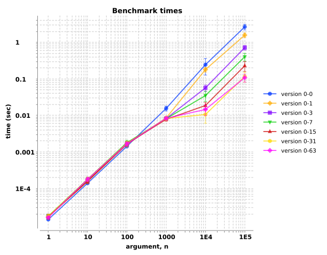

transduce benchmarks change with additional CPUs?
Observations: Performance improves roughly linearly with more CPUs.
See also:
Benchmarks defined here, similar to before.
We'll test vectors increasing in length from one element to one-hundred-thousand elements, by powers of ten. For each element, a pre-generated random
floating point number, we'll construct a hashmap of eighteen mathematical operations on that number (trig ops, logarithms, etc.) that the JVM compiler
oughtn't be able to optimize. To amplify the computation requirements, we'll make that hashmap five times for each element, giving a total of ninety
computations per element of the vector. We'll use the Criterium benchmarking library to measure
the execution times of sixty repetitions of each condition. Benchmarks were run on a 64-CPU machine with 128 GiB of memory (an Amazon Elastic Cloud
Compute c6i.16xlarge instance). The taskset utility explicitly assigns
the process affinity to exactly 1, 2, 4, 8, 16, 32, or 64 CPUs.
Overall, we observe that the execution times increase with increasing vector lengths. When the vector is short, the single-threaded transduction is
slightly faster. Once the vector grows to a few thousand elements, adding processors (i.e., more resources to compute a thread's task) decreases the
computation time, roughly proportional to the number of processors. Brokvolli's multi-threaded transduce and its companion multi-threaded
transduce-kv therefore offer improved performance when executing compute-heavy tasks on large quantities of elements in a collection.
This test performs the following mathematical operations per element: cube root, ceiling, cosine, cubing,
decrement, natural exponentiation, exponentiation, floor, identity, increment,
logarithm, natural logarithm, multiply by π, negation, round, sine, square-root, and
tangent. For each element, that group of operations was performed five times on jittered values of the elements (i.e., (* 18 5) =>
90 operations per vector element). The "version" labels in the chart legend correspond to the taskset --cpu-list directives:
0-3 pins the benchmark to processors zero through three (i.e., four processors), 0-31 pins the benchmark to processors zero
through thirty-one (i.e., thirty-two processors), etc.
When the sample vector contains one hundred or fewer elements, the 1-processor benchmarks (a proxy for single-threaded transduce) runs
slightly faster (blue circles), likely due to the minimal overhead of managing the threads running on a single CPU. Above one thousand elements, the
multi-processor (i.e., >1 CPU) tests demonstrate a speedup. For vectors containing ten- or one-hundred-thousand elements, the evaluation times
decrease with increasing numbers of processors/threads. (Note that the logarithmic scale may disguise the magnitude of the speedups; select the "Show
details" button to see the measured times).
Here's a rough summary of the speedups for one-hundred-thousand-element vectors.
|
number of processors |
speedup |
naive expected speedup |
|---|---|---|
| 1 | 1× | — |
| 2 | 1.6× | 80% |
| 4 | 3.7× | 93% |
| 8 | 6.5× | 75% |
| 16 | 11× | 69% |
| 32 | 22× | 69% |
| 64 | 24× | 38% |
For this synthetic workload, recruiting up to thirty-two processors increased multi-threaded transduce's ability roughly
proportionately. Two CPUs could chew through same partitions 1.6× as fast as one CPU; four CPUs could do the job 3.7× as fast as one CPU,
etc. In general, the speedups are two-thirds to three-quarters times the number of CPUs. In other words, 8 CPUs give us about a 6× speedup,
while 16 CPUs give us about an 11× speedup.
An anomalous limit emerges somewhere between thirty-two (gold circles) and sixty-four (magenta diamonds) CPUs where the performance does not improve proportionally. Investigating this phenomenon is beyond the scope of this report.
